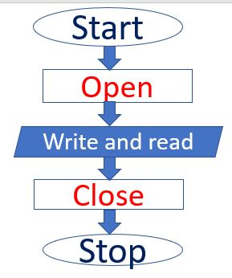
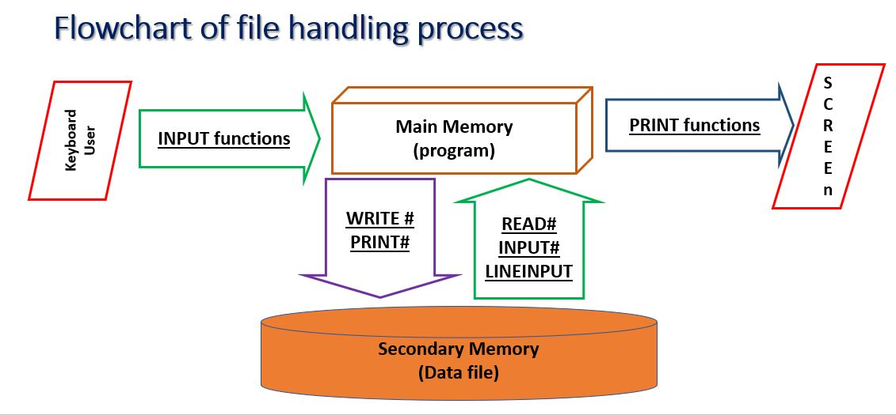
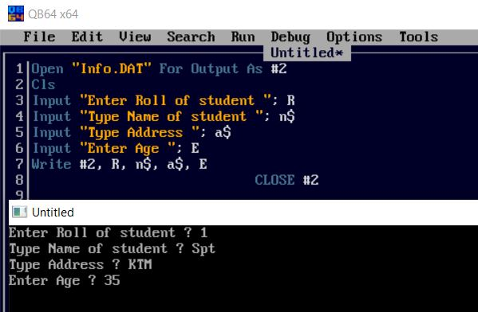
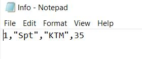

QBASIC (Quick Beginners All-purpose Symbolic Instruction Code)
Chapter 2
chapter 2 contents
Chapter 2
chapter 2 contents
QBASIC Programming Theory
Modular Programming - Theory (One-mark Questions)
1. What is QBASIC?
Ans: A modular programming language, where program is divided in different modules or functions is called QBASIC.
2. What is syntax?
Ans: The rule and grammar followed while writing statements, functions and variables in any programming language is called syntax.
3. Define variable and constant.
Ans: A location in the memory, contents of which can be changed during program execution is called Variable.
A symbol whose value does not change during program execution is called Constant .
4. What is operator?
Ans: Symbols, which are used for mathematical calculations, logical and string operations is called operator.
5. What is relational operator?
Ans: Relational operator is symbol, which are used in relational or logical expressions.
6. What is Logical operator?
Ans: Logical operators are symbols, which are used to combine two or more logical or relational expressions and return a single true or false value.
7. What is looping?
Ans: A control structure that executes the same program statement or block of program statements repeatedly for specified number of times or till the given condition is satisfied is called Looping.
8. What is nested loop?
Ans: A loop within another loop is called nested loop.
9. What is infinite loop
Ans: Never terminating loop is called infinite loop.
10. What is array?
Ans: A collection of the data of similar type, all of which are referred by a single variable name with different subscripts is called array.
11. Define user defined functions.
Ans: The function which is written and stored by the programmer to do the specific task is called user defined functions. The programmer defines this type of function, if QBASIC does not provide a built-in function to solve any problem required by the programmer. FUNCTION - END FUNCTION statement can be used to define a user defined function. Example: DECLARE FUNCTION SUM (NUM1,NUM2) .
12. Define built-in or Library Functions.
Ans: The functions provided by the QBASIC system is called built in or library functions. They allow the programmer to use them according to the requirement. Built in functions require to be called by the programmer to use them in a program. Example: LEN, MID$ etc.
13. Define modular Programming.
Ans: An approach in which the program is divided into separate independent units, called modules to perform specific task is called modular programming.
14. Mention any two advantages of modular programming.
Ans: (i) Reducing redundancy of code (Code re-usability) (ii) Saving time during project development
15. Why QBASIC is called modular programming language?
Ans: QBASIC is called modular programming language because it allows the user to divide program into manageable and functional modules or blocks with the help of sub procedure and function procedure.
16. Define Main module.
Ans: The top level module is called main module, which is located at the top of all procedures such as sub procedures or function procedure. It is the entry point of modular programming. Procedure name and parameters are declared and called from the main module.
17. Define Sub Procedure.
Ans: A small manageable and functional part of a program that performs specific tasks and does not return any value to the calling module is called Sub procedure.
18. What is the use of CALL statement.
Ans: The CALL statement transfers the control to sub procedure and statement in the sub procedure execute. It is used to call or execute a sub procedure from the main module.
19. Define arguments.
Ans: The constant or variables enclosed in the parenthesis of procedure call statement and that are supplied to a procedure are called arguments. It is also known as actual parameter. The argument can be passed to a procedure either by reference or by the value method.
20. Define parameters.
Ans: Variables in sub module or a procedure declaration which accept data or variables passed to them from the calling module are called parameters. It is also known as formal parameter.
21. Define Local Variable.
Ans: A variable which is defined in a module and is not accessible to any other modules is called local variable. It is only accessible to the module where it is defined. Value of local variable is destroyed when execution of module is over.
22. Define Global Variable.
Ans: A variable in main module which can be accessed from any modules or procedure of a program is called global variable. Variable can be made global declaring them with DIM SHARED or COMMON SHARED or SHARED attribute.
23. Write about Passing argument by reference.
Ans: Arguments are normally passed to a sub program by reference, which gives the procedure access to the actual variable. In this method, the address of each variable is passed to the procedure. The changes made in the procedure's variable they will make change in the value of arguments. It is the default mode of passing arguments in QBASIC. Example: CALL TEST (A,B)
24. Write about Passing argument by value.
Ans: Argument passed by the value method does not make any effect to value of the variables which are passed to a procedure even they are changed in the procedure. When arguments are passed by value method, it makes a duplicate copy of arguments and their values are used directly in the parameters. The changes made in the procedure's variable they does not make any change in the value of arguments. To pass argument by value method each argument is enclosed in individual parentheses in the calling statement. Example: CALL TEST ( (A) , (B) )
25. Define procedure.
Ans: A collection of code which perform an action is called procedure.
26. Mention the types of procedure.
Ans: (i) Sub procedure (ii) Function procedure
27. List any two advantages of procedure.
Ans: (i) It divides big program into small manageable module , makes easy to debug. (ii) It reduces the program codes because a single module can be used in different places.
28. Differentiate between Function and Sub procedure.
Ans:
Function Procedure (i) It returns value. (ii) It does not use call statement.
Sub Procedures (i) It does not return value. (ii) It uses call statement.
A. File Handling in QBASIC
File: is collection of different data or information or instructions, which is stored in secondary storage devices under a unique file name.
File Handling: is a process to create a data file, write data to the data file and read data from the specified data file.
There are two types of files that can be created and handled in QBASIC.
Data File: is a collection of data such as name, address, class, etc. required for data processing.
Program File: is set of instruction written in a computer language for data processing under unique file name
QBASIC supports two types of file handling process: Sequential and Random Access files handling.
Sequential Access to a data files: means that the computer system reads or writes information to the file sequentially, starting from the beginning of the file and proceeding step by step.
Random Access to a data files: means that the computer system can read or write information anywhere in the data file.
There are basically three file operations we can perform in QBASIC. They are:
a) Opening
the File
b) Read from the File/Write into the File
c) Close the File


Opening a file
a. Opening a file:
Opening file referes to create new file or open existing file to write contents or read contents from the file. OPEN statement is used to create a new file or open an existing file.
Syntax
OPEN "file_name" FOR [mode] AS #filenum
I. "file_name" can be with extension e.g. .txt, .doc, .dat etc.
II. The different modes of opening sequential data files are:
a) INPUT - Read only from sequential file
b) OUTPUT - Write to a sequestial File
c) APPEND - Write to the end of a file
Example-1:
OPEN "info.txt" FOR OUTPUT AS #1
It creates and opens a new file named “info.txt” to store records.
Example-2:
OPEN "Student.doc" FOR APPEND AS #1
It creates or opens an existing file named “Student.doc” to store records.
Note: When you open an existing file in APPEND mode, the same file will be opened. If the file does not exist, then it creates a new file as by OUTPUT mode.
Example-3:
OPEN "info.txt" FOR INPUT AS #1
It opens the existing file "info.txt" to read records from this file.
Note: The error message will be shown if the file does not exist.
Alternative Syntax of OPEN Statement
We can use OPEN Statement in alternative way as well.
Syntax
OPEN "file_mode", #filenumber, "File_name"
Example-4:
OPEN "O", #1, "info.txt"
Opens the file in output (writing) mode
OPEN "I", #1, "info.txt"
Opens the file in input (reading) mode
OPEN "A", #1, "info.txt"
Opens the file in append (writing or and adding) mode
Storing data into a file
b) Storing Records into a Data File:
WRITE # statement:is used to write data to a file.
Syntax
WRITE #filenumber, expressionlist
"filenumber" is an integer used in an OPEN statement for the file.
"expressionlist" is one or more string or numeric expressions, separated by commas.
Example-1:
OPEN "STUDEND.TXT" for OUTPUT as #1
INPUT "Enter name",n$
INPUT "Enter age",a
WRITE #1, n$, a
CLOSE #1
WRITE #1, n$, a
It writes (stores) the values stored in the variables N$, a in the file having #1, using comma (,) between each field values and encloses the string values by double quotes (“ ”).
PRINT # statement:is used to write data to a file as WRITE statement.
Syntax
PRINT #filenumber, expressionlist
It writes (stores) the values stored in the variables N$, a in the file having #1, but it gives space instead of comma (,) between each field values and does not enclose the string values by double quotes (“ ”).
Closing file(s)
c) Closing file(s):
We must close the file after read from or write data to file. CLOSE # statement is used to close data file(s).
Syntax
CLOSE #FILENUMBER1, #FILENUMBER2 .....
If all arguments are omitted, all open files are closed
filenumber is the number of an
open file
Example:
CLOSE #1 or CLOSE #1, #2 or CLOSE
CLOSE #1: closes a file having filenumber #1, where CLOSE #1, #2: closes both file and CLOSE: closes all opened files.
Lab Practice:
Example: 1. WAP to create a file Info.dat and store Roll, Name, Address and Age of a student.
OPEN "Info.DAT" FOR OUTPUT AS #2
CLS
INPUT "Enter Roll of student "; R
INPUT "Type Name of student "; n$
INPUT "Type Address "; a$
INPUT "Enter Age "; E
WRITE #2, R, n$, a$, E
CLOSE #2
END
The above program creates "Info.dat" file and stores Roll, name, addres, age
of a
student and closes program.
Here for OUTPUT as #2 refers the program is OUTPUT mode opens as filenumber or
pointer(address) 2.
WRITE #2, writes the suppied values to given file address/ filenumber.


Example: 2. WAP to create a file "marks.txt" and store record of 5 students in fields: Roll, Name, marks of 5 subjects, total and percentage
OPEN "marks.txt" FOR OUTPUT AS #1
CLS
FOR P = 1 TO 5 STEP 1
INPUT "Enter Roll of student "; R
INPUT "Type Name of student "; n$
INPUT "Enter the marks of 5 subjects",a,b,c,d,e
Total = a + b + c + d + e
per = total/5
WRITE #2, R, n$, total, per
NEXT
CLOSE #2
END
The above program creates "MARKS.TXT" file and stores Roll, name, total,
percentage marks of 5
students and closes program.

Achievements
!
500+
Courses
25+
Awards
50,000+
Students